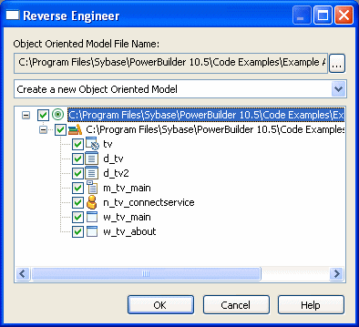

When objects in a PowerBuilder target are reverse-engineered for the first time, the target is linked with a generated class diagram and OOM file. By default, the generated OOM file name has the same name as the target file, but with an oom extension. For example, if the PowerBuilder target name is test.pbt, then the file test.oom is generated in the same directory as the target file.
If an OOM is already linked with the PowerBuilder target, you can determine how changes to PowerBuilder objects will affect the linked OOM when you reverse-engineer the target. The options you can select from are:
- Merge with existing Object Oriented Model (default)
- Replace existing Object Oriented Model
- Replace selected packages and classes
- Replace selected classes
If the target is not currently linked with an OOM, the only selection is:
- Create a new Object Oriented Model
Changing the OOM file name
Before you create an OOM file from a PowerBuilder target through reverse engineering, you can change the name of the file and its directory, and you can decide whether to overwrite or merge the contents of the OOM with an existing OOM file.
 To change the OOM file name linked to the target
To change the OOM file name linked to the target
In the Reverse Engineer dialog box for the PowerBuilder target, click the ellipsis button next to the Object Oriented Model File Name field.
The Plug-in Attributes of Target dialog box displays.
Modify the path and name of the oompath attribute and click OK.
If you select an existing file name, the Delete Existing Object Oriented Model File check box in the Reverse Engineer dialog box is not grayed.
(Optional) Select a reverse-engineering option from the drop-down list.
If an OOM is already linked to the PowerBuilder target and you leave the default selection, new packages, classes, and attributes will be merged with existing packages, classes, and attributes in the linked OOM file. This means that other classes and attributes in the existing OOM file will not be overwritten or deleted when you reverse-engineer the PowerBuilder target.
Other selections allow you to merge the packages while replacing selected classes and their attributes; replace selected packages and classes without replacing nonselected packages and their classes; or replace the entire OOM file.
Click OK to reverse-engineer the target.